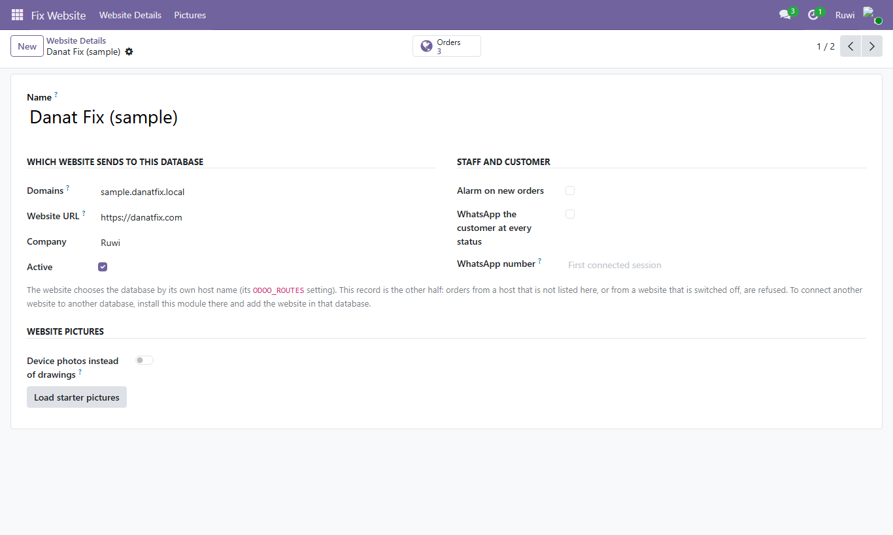
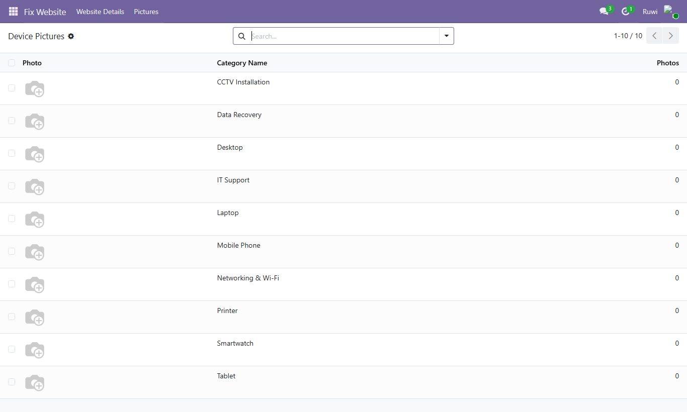
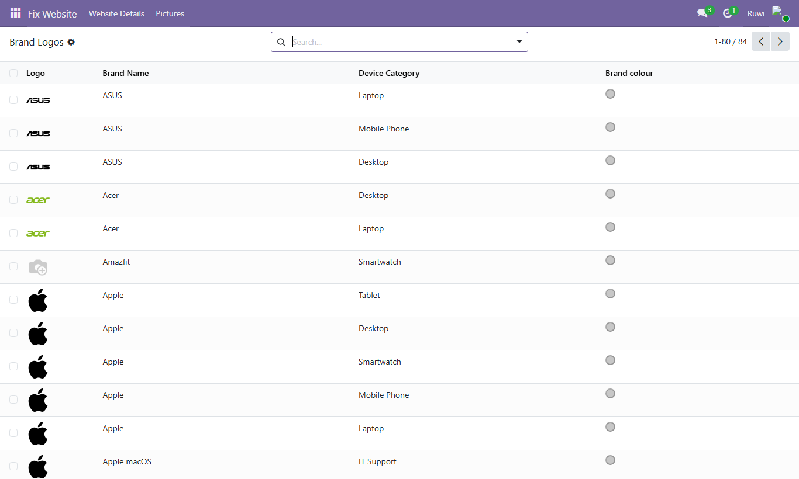
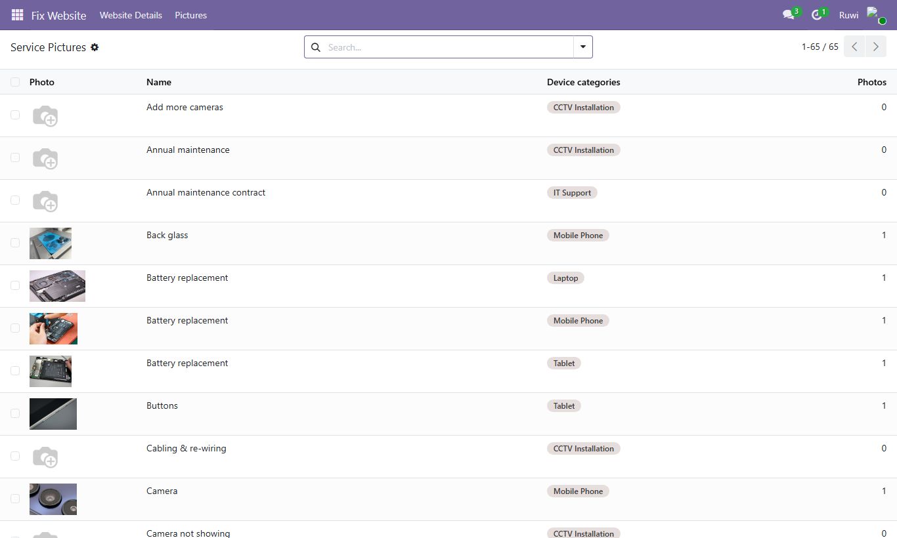
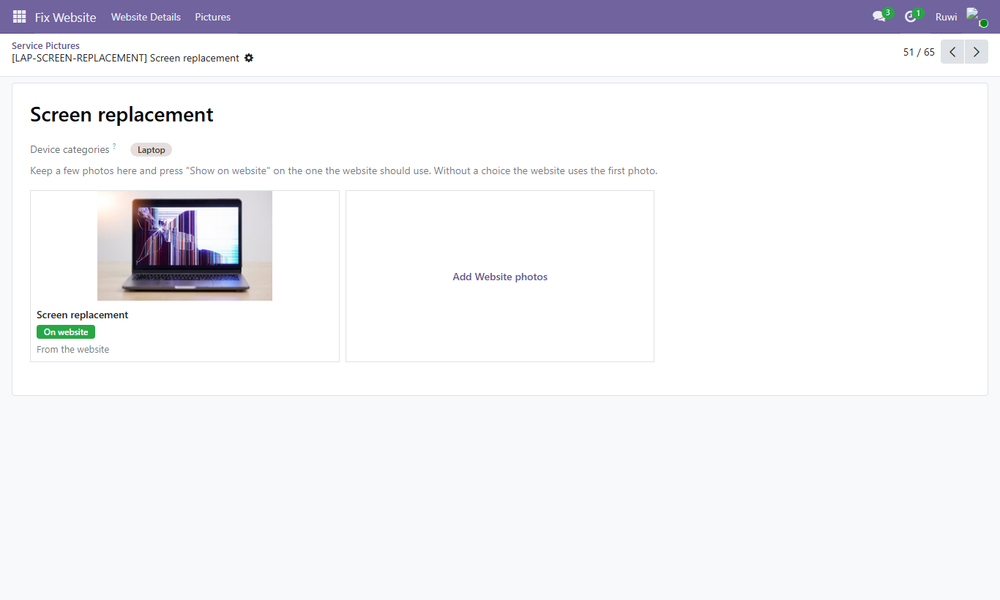

The people who look after the website pick its pictures here instead of in code: device photos or drawings, the original logo of every brand, and photos for every repair service. The website reads them from the booking catalogue it already calls.
One toggle shows device types (Mobile Phones, Laptops, Printers…) as drawings or as their chosen photo, across the whole site. Both stay saved. "Load starter pictures" fills empty places only.

Each device type keeps a gallery of photos; "Show on website" picks the one used in photo mode.

The original logo of every brand, phones to CCTV. "Missing logo" shows what is left to add.

Every repair service with its shown photo; filters for "Missing picture" and "Fewer than 3 photos".

Inside a service: its photos side by side. The one on the website carries a green badge; "Show on website" switches it, and "Add Website photos" uploads your own.
